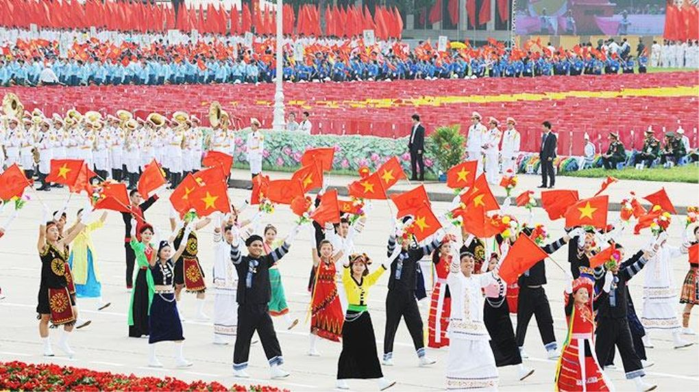
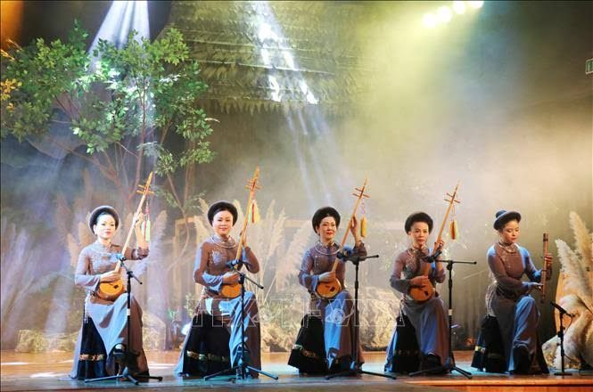
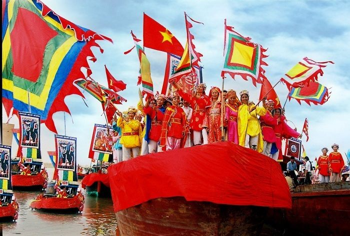
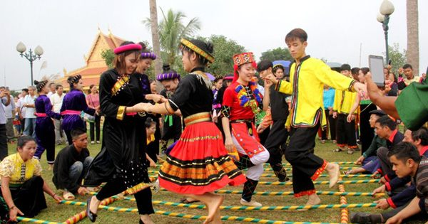
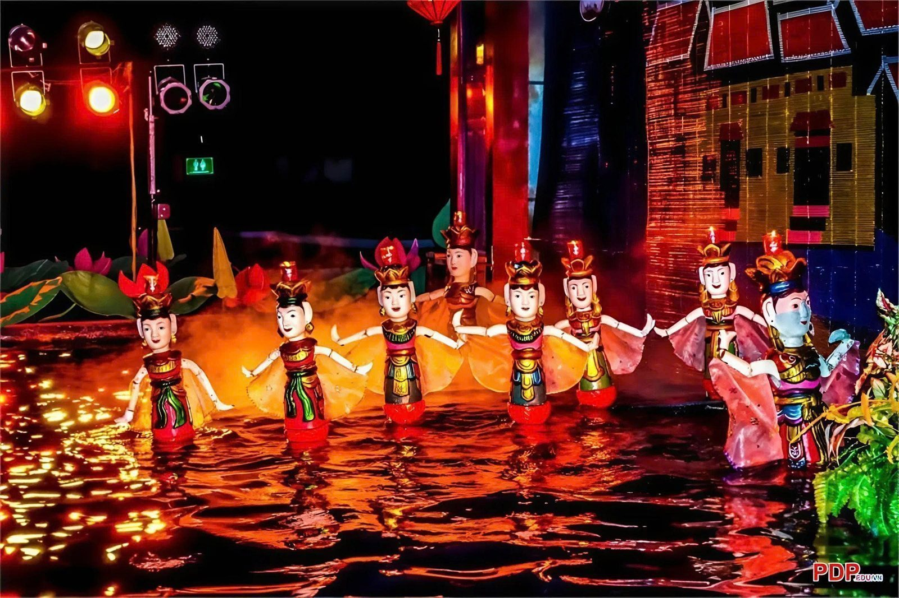
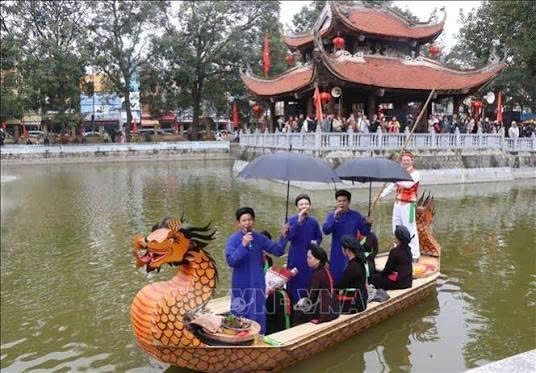
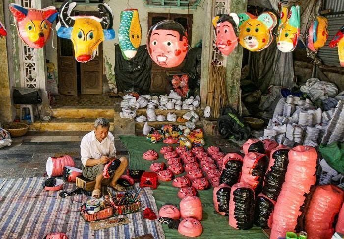
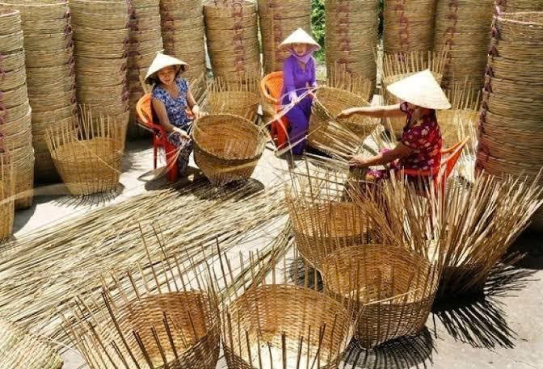
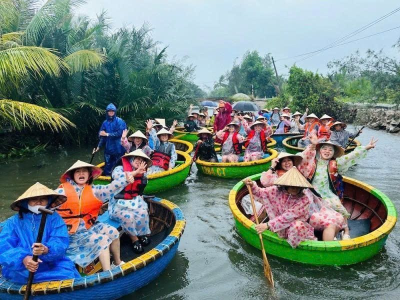

Vì sao cần giữ gìn bản sắc?
Trong bối cảnh hội nhập và phát triển hiện nay
Giữ gìn bản sắc văn hóa dân tộc
Trong thời đại hội nhập và phát triển, sự giao lưu giữa các quốc gia ngày càng mạnh mẽ. Chúng ta có nhiều cơ hội tiếp cận với những nền văn hóa khác nhau, nhưng đồng thời cũng đứng trước nguy cơ một số giá trị truyền thống bị mai một hoặc dần bị lãng quên. Vì vậy, giữ gìn bản sắc văn hóa dân tộc có ý nghĩa quan trọng:
Thứ nhất
Lưu giữ những giá trị tinh túy của tinh thần dân tộc cho thế hệ mai sau. Bản sắc văn hóa có tính kế thừa. Do đó, nó phải được giữ gìn và phát huy, để những giá trị còn nguyên vẹn truyền đến thế hệ sau này.
Thứ hai
Bảo vệ khỏi sự băng hoại của thời gian. Thời gian phá hủy vạn vật, không có gì nằm ngoài quy luật thành, trụ, hoại, không. Đặc biệt, đối với các loại kiến trúc cổ xưa, nếu không có các biện pháp phục dựng, trùng tu thì không thể gìn giữ đến ngày hôm nay được.
Thứ ba
Phòng ngừa các thế lực thù địch muốn xuyên tạc, phá hoại bản sắc văn hóa của dân tộc. Các thế lực chống phá nhà nước luôn đợi chờ cơ hội để chống phá, bản sắc văn hóa dân tộc cũng là một trong những mục tiêu. Gìn giữ và phát huy bản sắc văn hóa dân tộc là đã nắm giữ được chìa khóa đoàn kết dân tộc, đẩy lùi các thế lực xấu xa.
Thứ tư
Phát huy tinh thần của chủ nghĩa phủ định biện chứng. Bản sắc văn hóa cần được gìn giữ nhưng không có nghĩa là gìn giữ những hủ tục lạc hậu, cổ hủ. Do đó, phát huy cần phải có chọn lọc để phù hợp với thời đại.
Thứ năm
Tạo được nguồn “vốn” giao lưu với bạn bè quốc tế. Trong thời đại mà hội nhập đang là xu thế tất yếu, bản sắc văn hóa dân tộc giống như một ký hiệu để phân biệt lẫn nhau. Không những vậy, nó còn là nguồn vốn để giao lưu trao đổi với bạn bè thế giới, tăng cường quảng bá hình ảnh đất nước.
Nguồn: UNESCO – Tuyên ngôn Toàn cầu về Đa dạng Văn hóa (2001); Luật Di sản văn hóa số 45/2024/QH15
Những nét đẹp văn hóa cần gìn giữ









Nguồn: Danh sách Di sản văn hóa phi vật thể quốc gia (Việt Nam)